Commander decks
Browse decks by bracket in List, or explore collapsible strategy
groups in Categories. Filter by any theme to find decks that combine several plans.
88 decks
Layout
Bracket 3
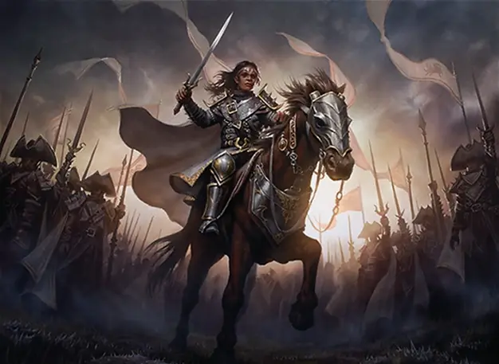
Adeline-Humans
Adeline, Resplendent Cathar
by zzwang
2026-10-01
 Tokens / Go-wideTribal / KindredCombat / Attack Triggers
100 cards32 landsMV 2.91GC 3/3
Tokens / Go-wideTribal / KindredCombat / Attack Triggers
100 cards32 landsMV 2.91GC 3/3
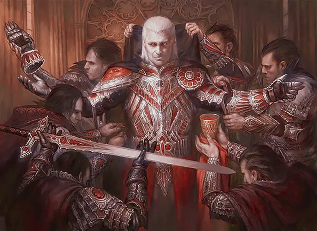
Edgar-Vampires
Edgar Markov
by zzwang
2026-10-01

 Tribal / KindredTokens / Go-wideAristocrats
100 cards34 landsMV 2.83GC 3/3
Tribal / KindredTokens / Go-wideAristocrats
100 cards34 landsMV 2.83GC 3/3
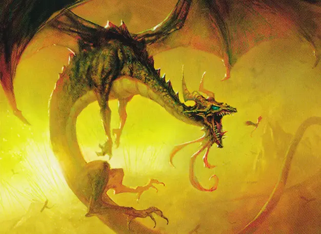
NicolBolas-Superfriends
Nicol Bolas
by digitalstealth
2026-09-29
 SuperfriendsDiscard / Wheels
100 cards38 landsMV 3.81GC 3/3
SuperfriendsDiscard / Wheels
100 cards38 landsMV 3.81GC 3/3
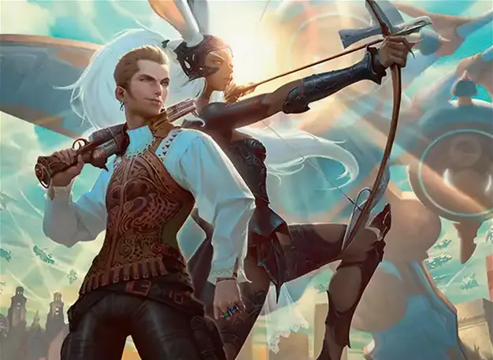
BalthierFran-Vehicles
Balthier and Fran
by kupo7
2026-09-27
 Artifacts / VehiclesCombat / Attack Triggers
100 cards36 landsMV 2.73GC 3/3
Artifacts / VehiclesCombat / Attack Triggers
100 cards36 landsMV 2.73GC 3/3
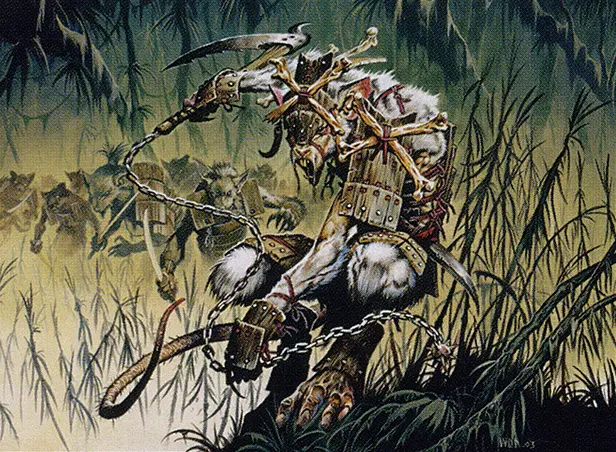
MarrowGnawer-Swarm
Marrow-Gnawer
by ratdos
2026-09-27
Tribal / KindredTokens / Go-wideAristocrats
100 cards36 landsMV 2.83GC 3/3
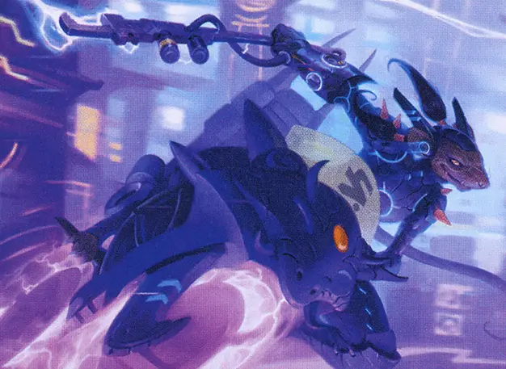
Greasefang-Vehicles
Greasefang, Okiba Boss
by ratdos
2026-09-27
Artifacts / VehiclesReanimatorCombat / Attack Triggers
100 cards35 landsMV 2.88GC 3/3
SecondDoctor-Draw
The Second Doctor
by digitalstealth
2026-09-27
PillowfortTokens / Go-wideToolbox / Value
100 cards36 landsMV 2.75GC 3/3
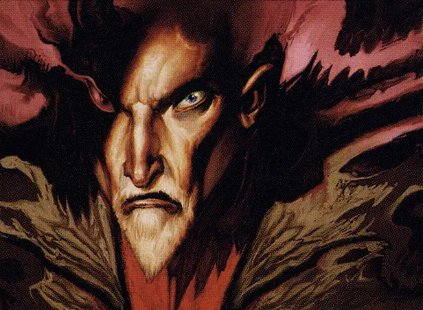
LimDul-Reanimator
Lim-Dûl the Necromancer
by digitalstealth
2026-09-26
ReanimatorTheft / GiftsAristocrats
100 cards36 landsMV 3.20GC 3/3
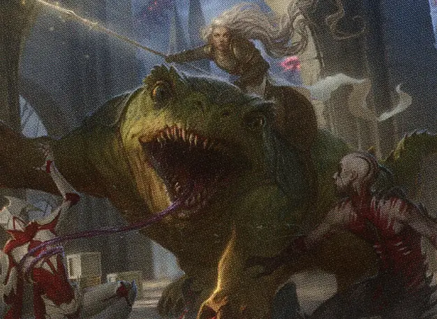
ThaliaGitrog-Lands
Thalia and The Gitrog Monster
by digitalstealth
2026-09-26
Lands / LandfallAristocratsStax / Prison
100 cards38 landsMV 2.82GC 3/3
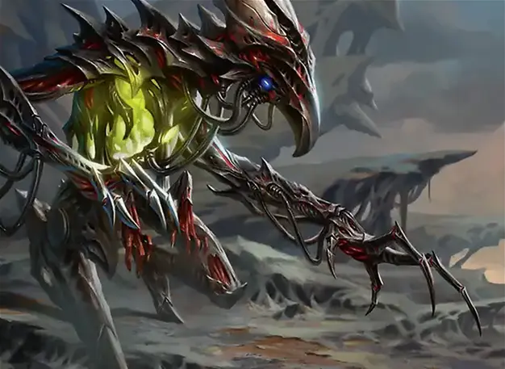
Brudiclad-Tokens
Brudiclad, Telchor Engineer
by ratdos
2026-09-26
Tokens / Go-wideArtifacts / Vehicles
100 cards37 landsMV 2.95GC 3/3
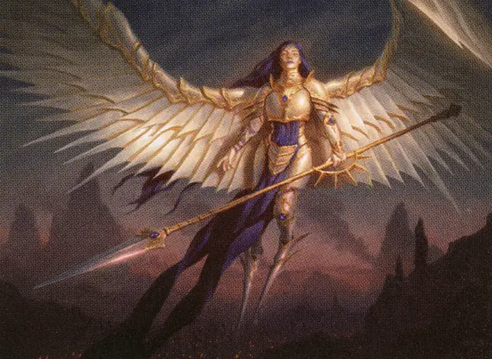
AkromaVialSmasher-Keywords
Akroma, Vision of Ixidor
by digitalstealth
2026-09-26
Combat / Attack Triggers
100 cards36 landsMV 3.47GC 3/3
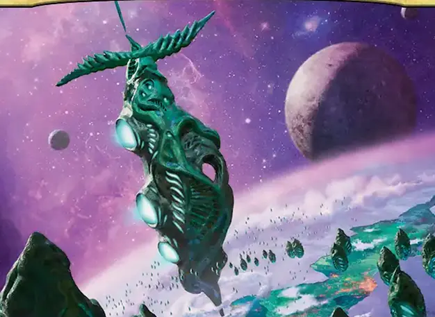
Hearthhull-Lands
Hearthhull, the Worldseed
by digitalstealth
2026-09-26
Lands / LandfallArtifacts / VehiclesAristocrats
100 cards39 landsMV 2.89GC 3/3
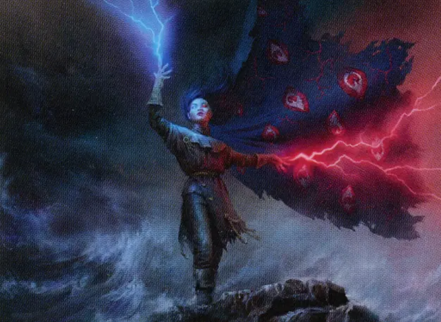
CecilyElmar-Spells
Cecily, Haunted Mage
by digitalstealth
2026-09-26
Spellslinger / StormToolbox / Value
100 cards36 landsMV 3.19GC 3/3
NicolBolas-Handbreaker
Nicol Bolas
by digitalstealth
2026-09-26
Discard / WheelsReanimator
100 cards36 landsMV 2.97GC 3/3
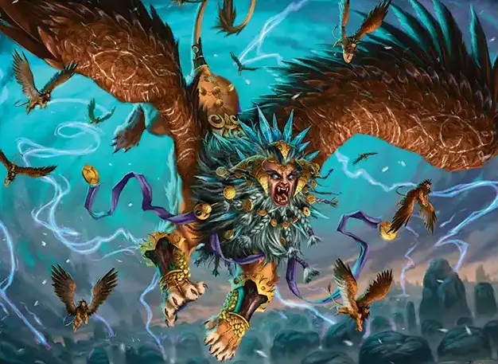
UrSphinx-Sphinxes
The Ur-Sphinx
by ratdos
2026-09-26
Tribal / KindredRamp / Big Mana
100 cards37 landsMV 3.84GC 3/3
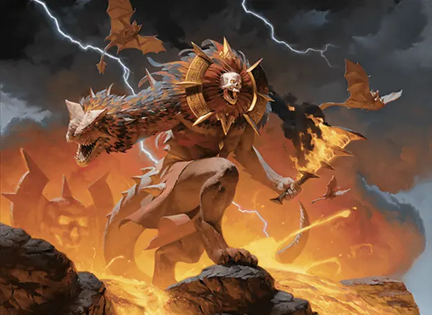
OjerAxonil-Burn
Ojer Axonil, Deepest Might
by kupo7
2026-09-24
Group Slug / PunisherSpellslinger / Storm
100 cards34 landsMV 2.48GC 3/3
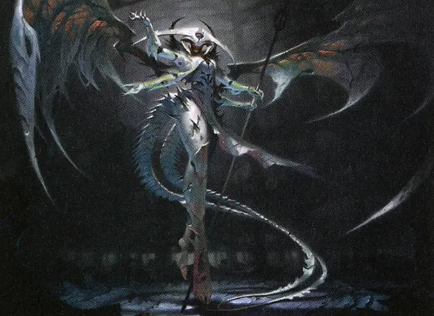
Atraxa-Counters
Atraxa, Praetors' Voice
by kupo7
2026-09-23
Counters / ProliferateCombat / Attack Triggers
100 cards36 landsMV 2.56GC 3/3
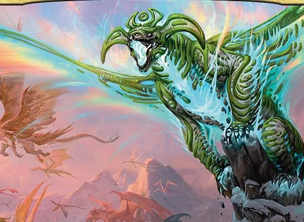
Ureni-Dragons
Ureni of the Unwritten
by digitalstealth
2026-09-23
Tribal / KindredCombat / Attack TriggersRamp / Big Mana
100 cards37 landsMV 4.24GC 3/3
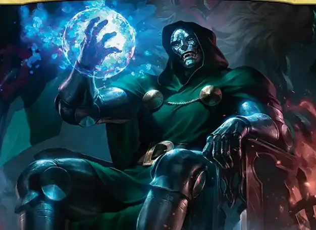
DoctorDoom-Reanimator
Doctor Doom, King of Latveria
by digitalstealth
2026-09-23
ReanimatorTribal / KindredCombat / Attack Triggers
100 cards36 landsMV 3.06GC 3/3
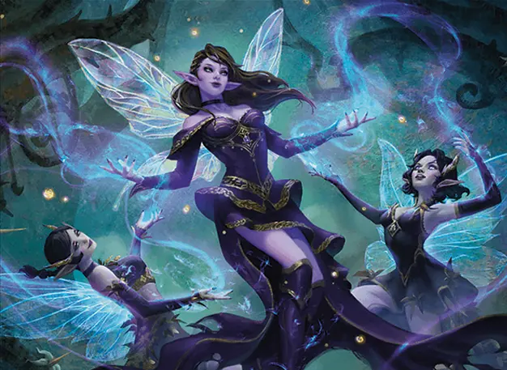
Alela-Tempo
Alela, Cunning Conqueror
by kupo7
2026-09-22
Tokens / Go-wideSpellslinger / StormGoad / Forced Combat
100 cards35 landsMV 2.80GC 3/3
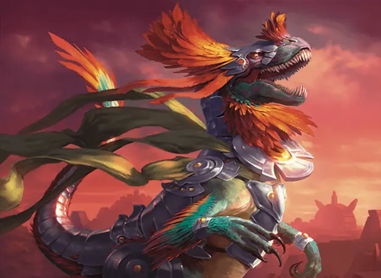
Pantlaza-Discover
Pantlaza, Sun-Favored
by em0k1ller
2026-09-14
Tribal / KindredBlink / ETBRamp / Big Mana
100 cards37 landsMV 3.87GC 3/3
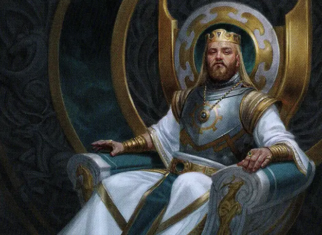
Kenrith-Activations
Kenrith, the Returned King
by ratdos
2026-09-13
Toolbox / ValueRamp / Big Mana
100 cards36 landsMV 2.55GC 3/3
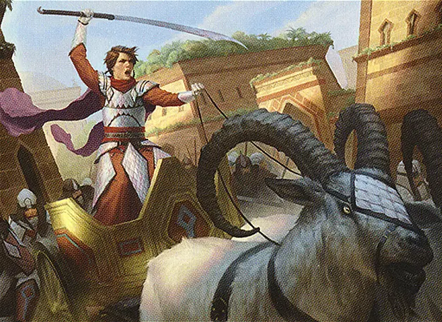
Anafenza-Hatebears
Anafenza, the Foremost
by em0k1ller
2026-09-10
Stax / PrisonCombat / Attack Triggers
100 cards36 landsMV 2.53GC 3/3
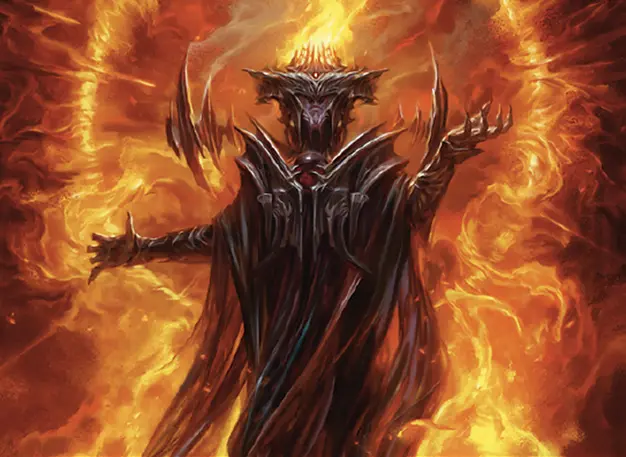
Sauron-Reanimator
Sauron, the Dark Lord
by digitalstealth
2026-09-10
ReanimatorDiscard / WheelsTokens / Go-wide
100 cards36 landsMV 3.16GC 3/3
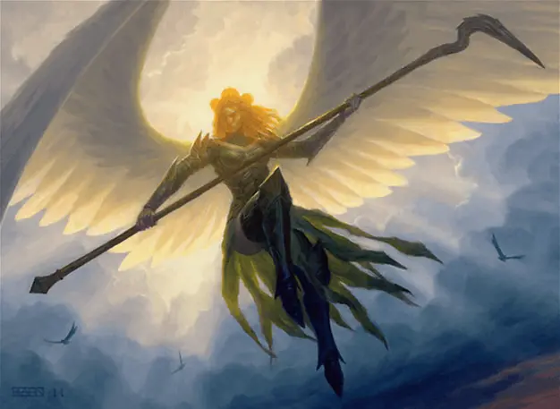
Sigarda-Hatebears
Sigarda, Host of Herons
by em0k1ller
2026-09-10
Stax / PrisonVoltron
100 cards36 landsMV 2.70GC 3/3
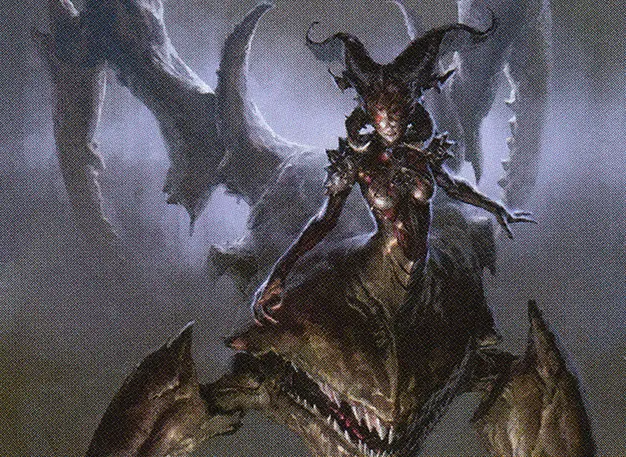
Sheoldred-Reanimator
Sheoldred, Whispering One
by kupo7
2026-09-10
ReanimatorAristocrats
100 cards36 landsMV 3.06GC 3/3
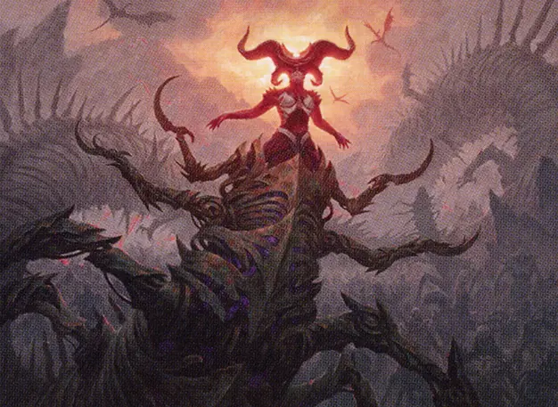
Sheoldred-Drain
Sheoldred, the Apocalypse
by kupo7
2026-09-10
Group Slug / PunisherDiscard / WheelsLifegain / Drain
100 cards36 landsMV 3.11GC 3/3
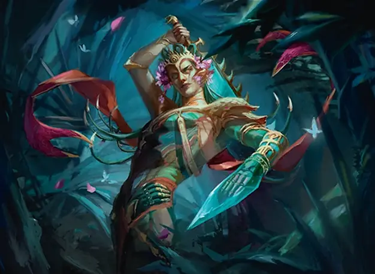
Kotis-Theft
Kotis, the Fangkeeper
by kupo7
2026-09-09
Theft / GiftsVoltron
100 cards36 landsMV 2.34GC 3/3
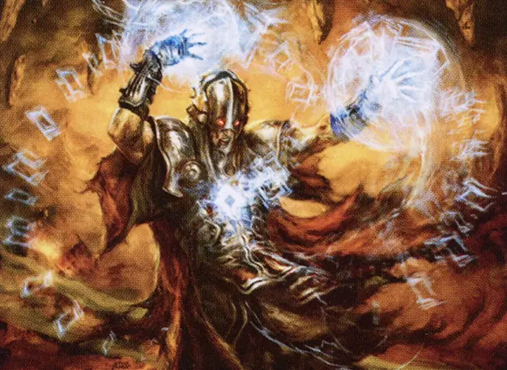
Venser-Wizards
Venser, Shaper Savant
by digitalstealth
2026-09-09
Blink / ETBTribal / KindredStax / Prison
100 cards36 landsMV 3.05GC 3/3
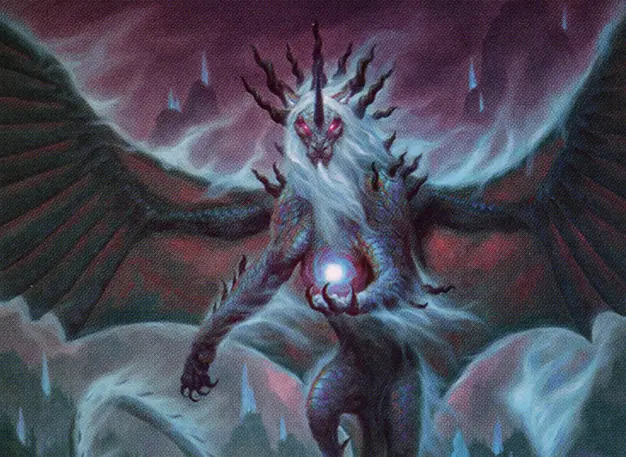
Ghidorah-Mutate
Illuna, Apex of Wishes
by em0k1ller
2026-09-08
VoltronToolbox / Value
100 cards36 landsMV 3.05GC 3/3
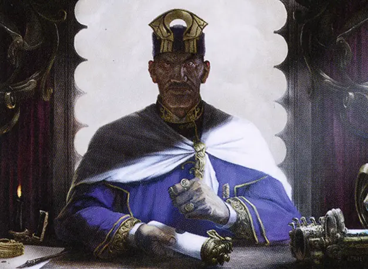
Kambal-Punisher
Kambal, Consul of Allocation
by zzwang
2026-09-08
Group Slug / PunisherPillowfortLifegain / Drain
100 cards36 landsMV 2.86GC 3/3
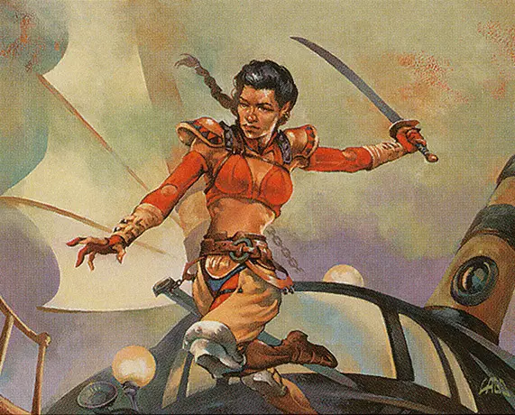
CaptainSisay-Legends
Captain Sisay
by digitalstealth
2026-09-07
Toolbox / ValueStax / Prison
100 cards36 landsMV 3.19GC 3/3
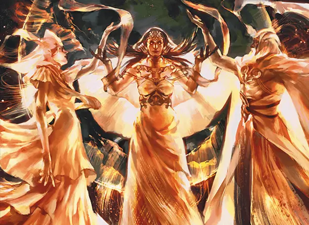
Capitoline-Emblem
The Capitoline Triad
by ratdos
2026-09-07
Artifacts / VehiclesTokens / Go-wide
100 cards36 landsMV 4.34GC 3/3
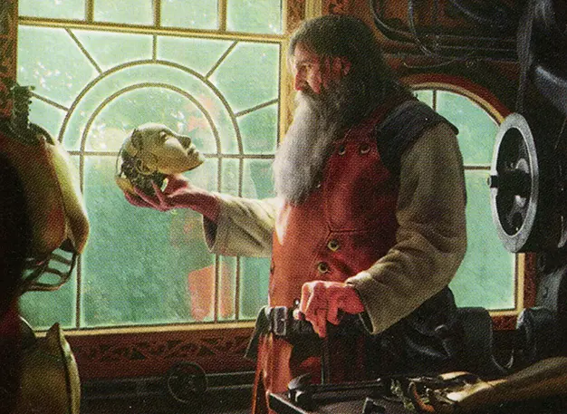
Feldon-Reanimator
Feldon of the Third Path
by ratdos
2026-09-07
ReanimatorTokens / Go-wideArtifacts / Vehicles
100 cards35 landsMV 3.58GC 3/3
TheMaster-Myriad
The Master, Multiplied
by ratdos
2026-09-07
Tokens / Go-wideBlink / ETBCombat / Attack Triggers
100 cards35 landsMV 2.97GC 3/3
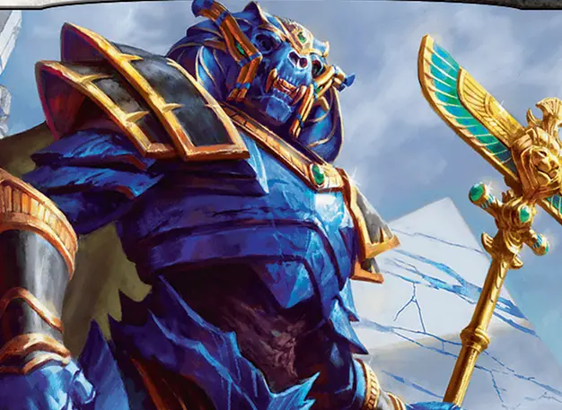
Hashaton-Reanimator
Hashaton, Scarab's Fist
by digitalstealth
2026-09-07
ReanimatorTokens / Go-wideDiscard / Wheels
100 cards36 landsMV 3.03GC 3/3
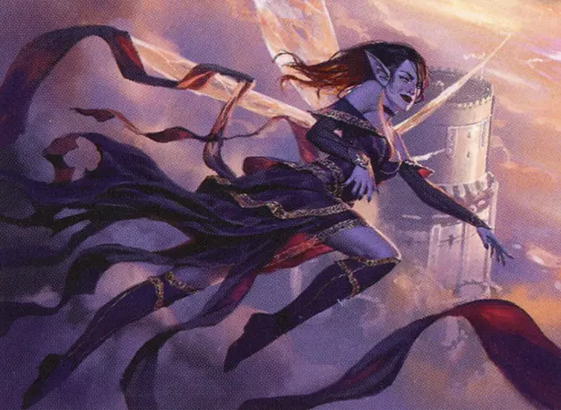
Alela-Prison
Alela, Artful Provocateur
by kupo7
2026-09-07
Stax / PrisonPillowfortTokens / Go-wideArtifacts / VehiclesEnchantress
100 cards36 landsMV 2.48GC 3/3
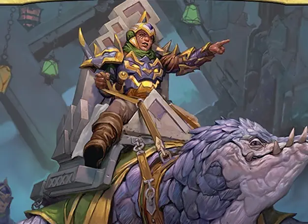
Felothar-Reanimator
Felothar the Steadfast
by digitalstealth
2026-09-07
Combat / Attack TriggersReanimator
100 cards36 landsMV 3.00GC 3/3
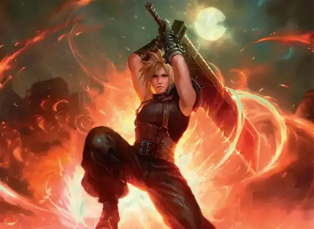
Cloud-Attacks
Cloud, Ex-SOLDIER
by zzwang
2026-09-06
Artifacts / VehiclesCombat / Attack TriggersTokens / Go-wide
100 cards35 landsMV 2.91GC 3/3
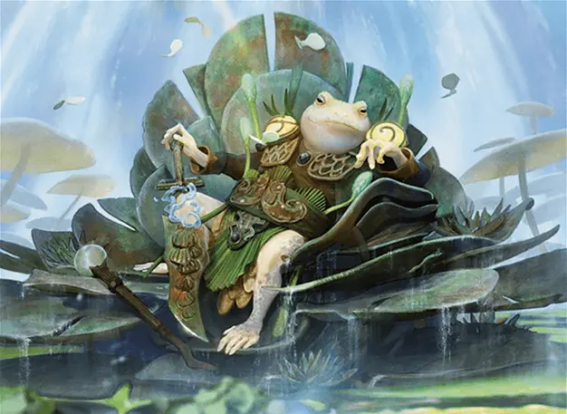
Glarb-Topdeck
Glarb, Calamity's Augur
by digitalstealth
2026-09-05
Toolbox / ValueRamp / Big ManaReanimator
100 cards35 landsMV 3.35GC 3/3
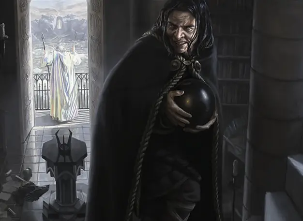
Grima-Theft
Gríma, Saruman's Footman
by digitalstealth
2026-09-05
Theft / GiftsCombat / Attack Triggers
100 cards35 landsMV 2.97GC 3/3
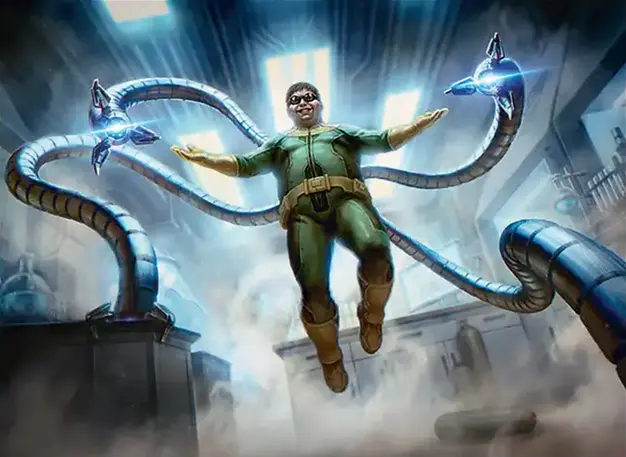
DoctorOctopus-Refill
Doctor Octopus, Master Planner
by ratdos
2026-08-29
Toolbox / ValueDiscard / WheelsSpellslinger / Storm
100 cards37 landsMV 2.87GC 3/3
DoctorDoom-Discard
Doctor Doom, King of Latveria
by digitalstealth
2026-08-29
Discard / WheelsLifegain / DrainLands / Landfall
100 cards37 landsMV 2.73GC 3/3
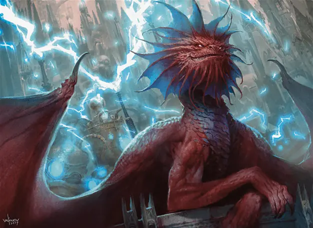
NivMizzet-Antispells
Niv-Mizzet, Parun
by em0k1ller
2026-08-29
Spellslinger / StormGroup Slug / Punisher
100 cards38 landsMV 2.32GC 3/3
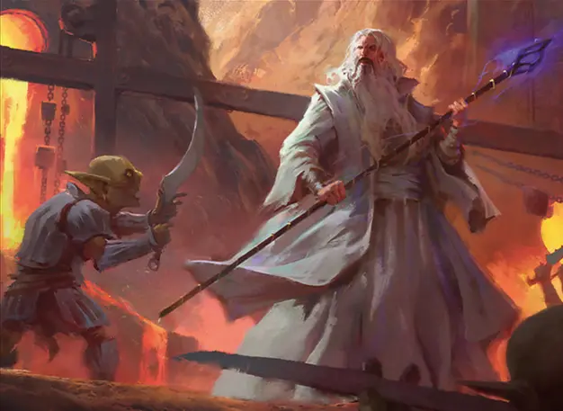
Saruman-Antistax
Saruman, the White Hand
by digitalstealth
2026-08-29
Spellslinger / StormTokens / Go-wide
100 cards38 landsMV 2.52GC 3/3
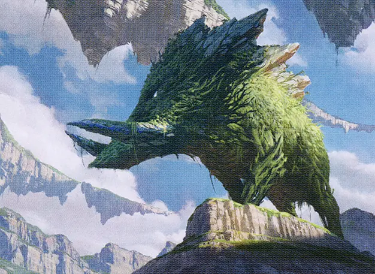
Yasharn-Antisacrifice
Yasharn, Implacable Earth
by em0k1ller
2026-08-29
Stax / PrisonPillowfort
100 cards37 landsMV 2.78GC 3/3
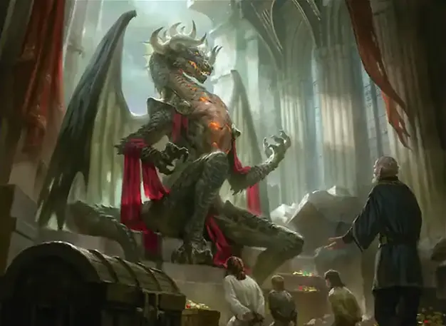
Korvold-Sacrifice
Korvold, Fae-Cursed King
by digitalstealth
2026-08-29
AristocratsArtifacts / VehiclesTokens / Go-wide
100 cards37 landsMV 2.70GC 3/3
DonAndres-Beats
Don Andres, the Renegade
by zzwang
2026-08-23
Theft / GiftsCombat / Attack TriggersArtifacts / Vehicles
100 cards36 landsMV 3.28GC 3/3
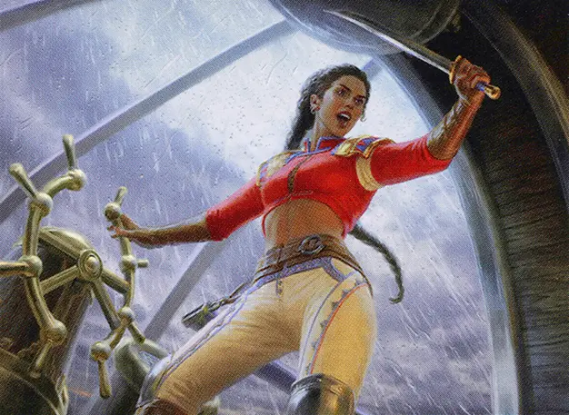
SisayWeatherlight-Toolbox
Sisay, Weatherlight Captain
by digitalstealth
2026-08-23
Toolbox / ValueStax / Prison
100 cards36 landsMV 2.78GC 3/3
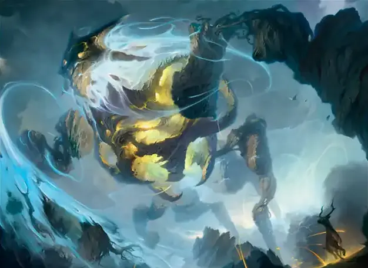
MaelstromWanderer-Roulette
Maelstrom Wanderer
by ratdos
2026-08-16
Ramp / Big ManaCombat / Attack Triggers
100 cards38 landsMV 4.95GC 3/3
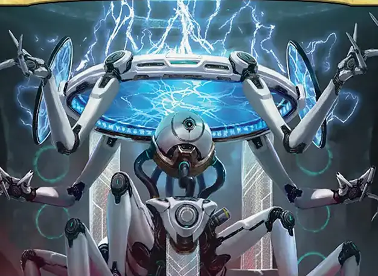
Kilo-Proliferate
Kilo, Apogee Mind
by kupo7
2026-08-15
Counters / ProliferateArtifacts / Vehicles
100 cards36 landsMV 2.69GC 3/3
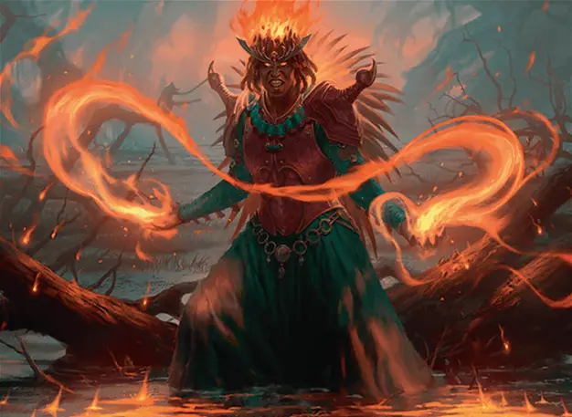
Kaervek-Punisher
Kaervek the Merciless
by zzwang
2026-08-14
Group Slug / PunisherPillowfort
100 cards36 landsMV 3.11GC 3/3
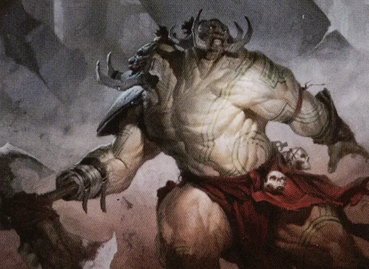
RuricThar-Punisher
Ruric Thar, the Unbowed
by em0k1ller
2026-08-14
Group Slug / PunisherCombat / Attack Triggers
100 cards36 landsMV 3.64GC 3/3
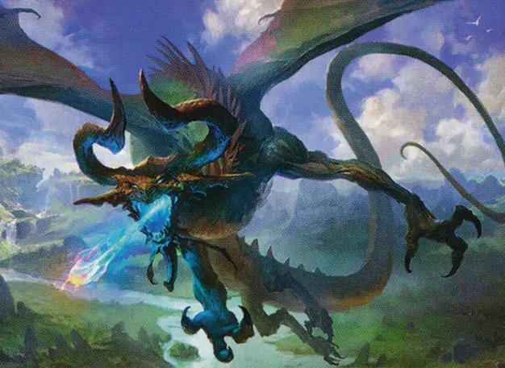
NicolBolas-Reanimator
Nicol Bolas, the Ravager
by digitalstealth
2026-08-14
ReanimatorDiscard / WheelsGroup Slug / Punisher
100 cards32 landsMV 3.15GC 3/3
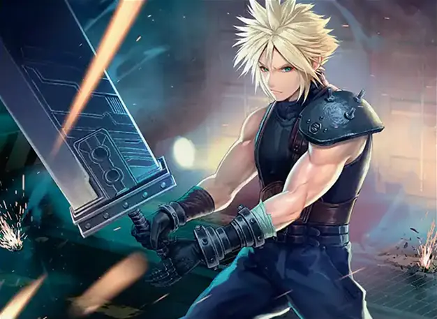
Cloud-Equipment
Cloud, Midgar Mercenary
by zzwang
2026-08-02
VoltronArtifacts / Vehicles
100 cards32 landsMV 2.59GC 3/3
Yshtola-Spells
Y'shtola, Night's Blessed
by em0k1ller
2026-08-01
Spellslinger / StormLifegain / Drain
100 cards36 landsMV 3.56GC 3/3
Kaalia-Angels
Kaalia of the Vast
by zzwang
2026-07-31
Tribal / KindredCombat / Attack TriggersReanimator
100 cards36 landsMV 3.86GC 3/3
Teysa-Aristocrats
Teysa Karlov
by zzwang
2026-07-31
AristocratsTokens / Go-wide
100 cards33 landsMV 2.82GC 3/3
Vivi-Spellslinger
Vivi Ornitier
by zzwang
2026-07-31
Spellslinger / StormCounters / Proliferate
100 cards30 landsMV 2.17GC 3/3
Bumbleflower-Menagerie
Ms. Bumbleflower
by zzwang
2026-07-31
Counters / ProliferateTokens / Go-wideToolbox / Value
100 cards37 landsMV 2.81GC 2/3
HeroesinaHalfShell-Ninjas
Heroes in a Half Shell
by zzwang
2026-07-31
Tribal / KindredCombat / Attack TriggersBlink / ETB
100 cards36 landsMV 2.50GC 3/3
GrandArbiter-Prison
Grand Arbiter Augustin IV
by em0k1ller
2026-07-30
Stax / PrisonPillowfort
100 cards35 landsMV 2.89GC 3/3
Gwenom-Drain
Gwenom, Remorseless
by zzwang
2026-07-30
Lifegain / DrainSpellslinger / Storm
100 cards34 landsMV 2.79GC 3/3
Isshin-Attacks
Isshin, Two Heavens as One
by zzwang
2026-07-30
Combat / Attack TriggersTokens / Go-wide
100 cards36 landsMV 3.08GC 3/3
Kozilek-Annihilator
Kozilek, the Great Distortion
by zzwang
2026-07-30
Ramp / Big ManaTribal / KindredCombat / Attack Triggers
100 cards50 landsMV 5.44GC 3/3
Lathril-Elves
Lathril, Blade of the Elves
by zzwang
2026-07-30
Tribal / KindredTokens / Go-wide
100 cards34 landsMV 2.83GC 3/3
Prosper-Treasure
Prosper, Tome-Bound
by zzwang
2026-07-30
Artifacts / VehiclesToolbox / Value
100 cards35 landsMV 3.09GC 3/3
Sythis-Enchantress
Sythis, Harvest's Hand
by zzwang
2026-07-30
EnchantressPillowfortTokens / Go-wide
100 cards33 landsMV 2.57GC 3/3
TheFirstSliver-Cascade
The First Sliver
by zzwang
2026-07-30
Tribal / KindredRamp / Big Mana
100 cards36 landsMV 3.17GC 3/3
Windgrace-Lands
Lord Windgrace
by zzwang
2026-07-30
Lands / Landfall
100 cards55 landsMV 3.29GC 3/3
Winota-Attacks
Winota, Joiner of Forces
by zzwang
2026-07-30
Combat / Attack TriggersTribal / KindredTokens / Go-wideStax / Prison
100 cards34 landsMV 2.39GC 3/3
Yuriko-Ninjas
Yuriko, the Tiger's Shadow
by zzwang
2026-07-30
Tribal / KindredCombat / Attack TriggersToolbox / Value
100 cards34 landsMV 2.83GC 2/3
Zur-Voltron
Zur the Enchanter
by zzwang
2026-07-30
VoltronEnchantressPillowfort
100 cards34 landsMV 2.27GC 3/3
Bracket 3.5
Najeela-Warriors
Najeela, the Blade-Blossom
by zzwang
2026-10-01
Tribal / KindredTokens / Go-wideCombat / Attack TriggersCombo
100 cards32 landsMV 2.47GC 3/3
Torbran-Burn
Torbran, Thane of Red Fell
by zzwang
2026-09-27
Group Slug / Punisher
100 cards34 landsMV 3.14GC 3/3
Gishath-Dinosaurs
Gishath, Sun's Avatar
by zzwang
2026-09-26
Tribal / KindredCombat / Attack TriggersRamp / Big Mana
100 cards37 landsMV 4.00GC 3/3
Shorikai-Prison
Shorikai, Genesis Engine
by zzwang
2026-09-10
Stax / PrisonPillowfortArtifacts / Vehicles
100 cards36 landsMV 2.56GC 3/3
Beamtown-Gifts
The Beamtown Bullies
by ratdos
2026-09-07
Theft / GiftsReanimatorGoad / Forced Combat
100 cards36 landsMV 2.42GC 3/3
MarrowGnawer-Rats
Marrow-Gnawer
by zzwang
2026-09-07
Tribal / KindredTokens / Go-wideCombo
100 cards33 landsMV 2.37GC 3/3
Kinnan-Infinite
Kinnan, Bonder Prodigy
by zzwang
2026-09-07
ComboRamp / Big Mana
100 cards28 landsMV 2.15GC 3/3
Selenia-Prison
Selenia, the Cursed Heart
by zzwang
2026-08-31
PillowfortLifegain / DrainCombo
100 cards36 landsMV 2.77GC 3/3
Lorehold-Miracles
Lorehold, the Historian
by zzwang
2026-08-30
Spellslinger / StormToolbox / Value
100 cards32 landsMV 3.68GC 3/3
Megatron-Reanimator
Megatron, Tyrant
by zzwang
2026-08-15
ReanimatorArtifacts / VehiclesAristocrats
100 cards36 landsMV 4.59GC 3/3
Urza-Combo
Urza, Lord High Artificer
by zzwang
2026-07-31
ComboArtifacts / Vehicles
100 cards31 landsMV 2.20GC 3/3
Krenko-Combo
Krenko, Mob Boss
by zzwang
2026-07-30
GoblinsTribal / KindredTokens / Go-wideComboAristocrats
100 cards35 landsMV 2.42GC 3/3
Bracket 4
Bracket 5
Stax / Prison
Tax actions, restrict resources, and shut down opposing engines.
Pillowfort
Make attacking you difficult while you develop a winning position.
Voltron
Build one creature into a lethal attacker with Auras, Equipment, or other buffs.
Goblins
Build around Goblins, from swarms and combat to sacrifice engines and combos.
Tribal / Kindred
Build around a shared creature type and its synergies.
Tokens / Go-wide
Create an army of tokens or small creatures and turn numbers into power.
Aristocrats
Sacrifice creatures and other permanents for cards, mana, and death triggers.
Reanimator
Use the graveyard to bring back threats or make powerful copies.
Spellslinger / Storm
Build engines around casting spells and chaining them into a decisive turn.
Group Slug / Punisher
Damage the table or punish opponents for drawing, casting, and other actions.
Combo
Assemble interacting pieces for a decisive loop or alternate win.
Lands / Landfall
Make land drops, land recursion, and land-based engines drive the deck.
Artifacts / Vehicles
Build around artifacts, Equipment, Treasures, or Vehicle crews.
Enchantress
Turn enchantments into a sustained engine of cards, protection, and threats.
Counters / Proliferate
Build and multiply counters on creatures and other permanents.
Lifegain / Drain
Use life as a resource and turn life gain into damage or life loss.
Discard / Wheels
Empty or replace hands and turn discarded cards into an advantage.
Superfriends
Protect planeswalkers and build toward their strongest loyalty abilities.
Theft / Gifts
Use opponents' cards or give away permanents with dangerous drawbacks.
Blink / ETB
Repeat enter-the-battlefield abilities with flicker and copy effects.
Combat / Attack Triggers
Win through combat abilities, attack triggers, and extra attacks.
Ramp / Big Mana
Accelerate mana into enormous creatures and spells.
Toolbox / Value
Use flexible tutors, draw engines, and repeatable abilities to outlast opponents.